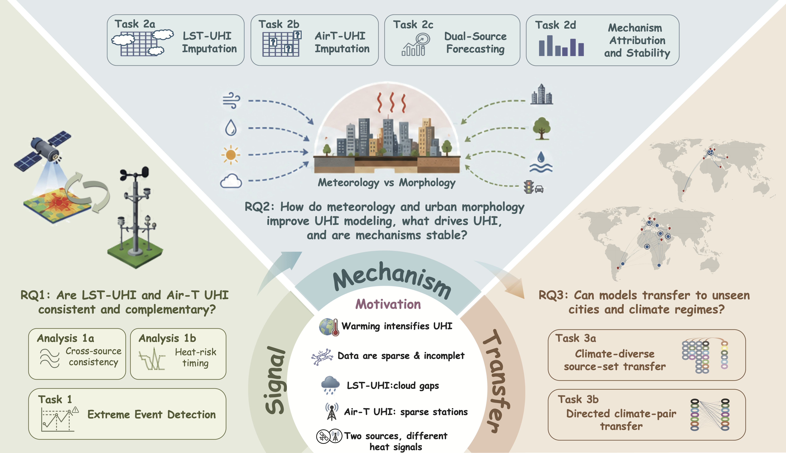
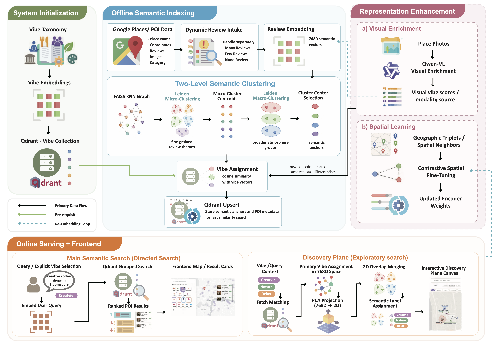

Wanyun Ling
PhD Researcher · Technical University of Munich
I am a first-year doctoral researcher at the Technical University of Munich (Department of Operations and Technology), working on time series analysis, spatio-temporal data mining, and Urban AI. I am supervised by Prof. Dr. Ziyue Li at TUM and Dr. Chenxi Liu at the Chinese Academy of Sciences.
My current research centres on the Urban Heat Island Foundation Model (UHIFM), through which I am developing a global, 16-city, hourly pretraining dataset and benchmark for UHI modelling. Our paper UHI-Bench has been accepted as a poster at KDD 2027 (Datasets and Benchmarks Track). My work spans three threads:
- Spatio-Temporal Foundation Models. Hourly urban climate forecasting, attribution, and cross-city transfer, centred on UHIFM.
- Interpretable Urban Climate AI. Urban heat exposure, climate equity, and adaptive mitigation, linking SHAP attribution, scenario simulation, and Bayesian optimisation.
- Multimodal Urban Understanding. Semantic urban mapping, POI retrieval, and vibe-aware place discovery from spatial, textual, and visual signals.
Time Series Analysis
Spatio-Temporal Data Mining
Urban AI
Foundation Models
Urban Heat Island
Interpretable ML
GeoAI
Multimodal Learning
Education
-
Technical University of MunichDr. rer. pol. · Urban AI2026 – now
-
RWTH Aachen UniversityM.Sc. Transforming City Regions2023 – 2026
-
Anhui Jianzhu UniversityB.Arch. Architecture2018 – 2023
Research Experience
-
TU Munich Smart City LabPhD Researcher · Spatio-Temporal Data Mining2026 – now
-
RWTH Aachen UniversityMaster Thesis · Urban Heat Inequality & Interpretable ML2025 – 2026
Honors & Awards
- ACM SIGSPATIAL Travel Grant · to attend SIGSPATIAL 2026Oct 2026
- STIBET I Graduation Scholarship · RWTH Aachen UniversityFeb–Apr 2026
- Outstanding Graduate Scholarship · Anhui Jianzhu University2023
- Third-Class Scholarship (consecutive) · Anhui Jianzhu University2018–2023
News
- Nov 2026UHI-Bench accepted as a poster at KDD 2027 (Datasets and Benchmarks Track).
- Nov 2026Our paper Decoupling Perception from Description: Computation-Grounded Representation Alignment between Multivariate Time Series and Language received the Best Paper Award at the MFMB Workshop on Multimodal and Foundation Models in Banking.
- Oct 2026Received an ACM SIGSPATIAL Travel Grant to attend SIGSPATIAL 2026.
- Oct 2026Two papers accepted at ACM SIGSPATIAL 2026 (Riverside, California, Nov 3–6): UHIFM and Atmosphere-Aware Place Discovery.
- Apr 2026Started my PhD at the Technical University of Munich.
- Dec 2025Presented Urban Climate Justice through Interpretable ML at the 61st ISOCARP World Planning Congress, Riyadh.
- Oct 2025Journal article published in Buildings: Adaptive Urban Heat Mitigation Through Ensemble Learning.
Selected Publications
(view all )
* corresponding author

Accepted (Poster) · KDD 2027 · Datasets and Benchmarks
UHI-Bench: Benchmarking Dual-Source Urban Heat Island Modeling Across Cities in Diverse Climate Regimes
KDD 2027 · Datasets and Benchmarks Track

Accepted · ACM SIGSPATIAL 2026
Towards an Interpretable Urban Heat Island Foundation Model for Forecasting, Attribution, and Climate Adaptation Decision Support
34th ACM SIGSPATIAL, Riverside, California, USA, November 3–6, 2026

Accepted · ACM SIGSPATIAL 2026
Atmosphere-Aware Place Discovery: Semantic Urban Mapping with Multimodal Vibe Enrichment
34th ACM SIGSPATIAL, Riverside, California, USA, November 3–6, 2026
▶ video
Conference · ISOCARP World Planning Congress · Dec 2025
Urban Climate Justice through Interpretable Ensemble Learning: Heat Exposure Inequities and Planning Strategies in Metro Vancouver
61st ISOCARP World Planning Congress · Riyadh
▶ video
Journal · Buildings · IF 3.2 · JCR Q2 · Oct 2025
Adaptive Urban Heat Mitigation Through Ensemble Learning: Socio-Spatial Modeling and Intervention Analysis
Buildings, 15(21), 3820